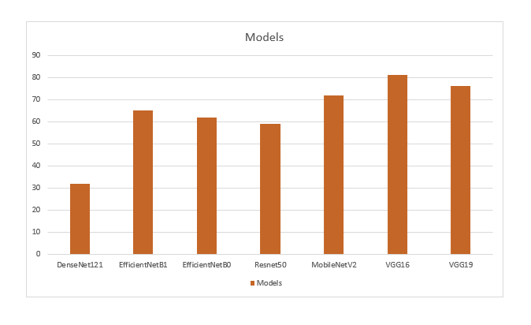
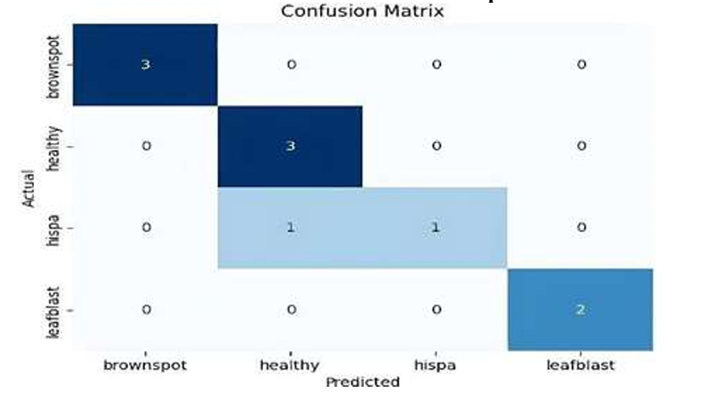

We're dedicated to merging advanced agricultural techniques with machine learning to revolutionize rice crop disease detection. Our research focuses on combating prevalent threats like Brown Spot, Leaf Blast, and Hispa, which significantly impact rice yields. By combining the analytical power of machine learning with agricultural expertise, we've developed a robust framework. Our user-friendly web application incorporates a machine learning model to swiftly identify diseases and provide tailored solutions. This empowers farmers with the tools needed to mitigate crop losses and enhance economic returns. Our mission is to support sustainable farming practices globally, ensuring farmers have the resources to safeguard their crops effectively.

This bar graph presents a comparative analysis of different deep learning models based on their performance. The models included are DenseNet121, EfficientNetB1, EfficientNetB0, Resnet50, MobileNetV2, VGG16, and VGG19. Among these, VGG16 and VGG19 exhibit the highest performance values, indicating their superior capabilities in the evaluated task. MobileNetV2 also shows strong performance, followed closely by EfficientNetB1 and EfficientNetB0. Resnet50 demonstrates moderate performance, while DenseNet121 shows the lowest performance among the models compared. This graph highlights the varying efficiencies of these models, which can guide the selection of an appropriate model based on the specific requirements and constraints of a given application.

This confusion matrix shows the performance of the VGG16 model in classifying four categories: brownspot, healthy, hispa, and leafblast. The diagonal elements represent the correctly classified instances: 3 brownspot, 3 healthy, 1 hispa, and 2 leafblast. The off-diagonal elements show misclassifications. Notably, there is some confusion between hispa and leafblast, with 1 hispa instance misclassified as leafblast and vice versa. The model accurately classifies brownspot and healthy categories, with no misclassifications in these categories. Overall, the matrix indicates that while VGG16 performs well, there is room for improvement in distinguishing between similar categories like hispa and leafblast.